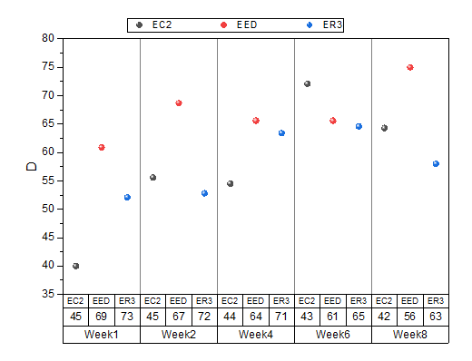
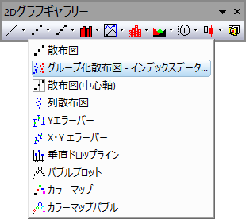
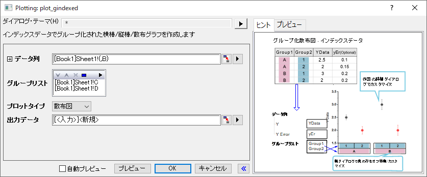

グループ化散布図 - インデックスデータ
GroupedScatter-IndexedData

要求されるデータ
入力データとして最低1つのY列を選択します。さらに、1つ以上の列がグループ情報である必要があります。
グラフ作成
plot_gindexedダイアログは次の2つの方法で開きます。
- メニュー 作図> カテゴリカル：グループ化散布図 - インデックスデータ
- 2Dグラフギャラリーツールバーのボタンをクリックします。
- 
開いたダイアログで、入力データ範囲を選択します。最低でも1つのグループ列を追加し、計算データの出力先を指定します。プレビューまたはOKをクリックして作図し、ダイアログを閉じます。
plot_gindexedダイアログボックス
-
- 
| データ列 |
この欄は、入力データを指定するのに使用します。 |
| グループ列 |
この部分は表示ボックスと5つのボタンがついたツールバーで構成されます。
- 表示ボックス
- 追加ボタンで選択されたグループ範囲が表示されます。最初に選択されたグループ範囲で、第一カテゴリーとなり、プロットのグループ表の下部に表示され、2番目以降のグループは、その上に表示されます。
- 追加ボタン

- このボタンをクリックしてコンテキストメニューから1つの列選択します。あるい列の選択をクリックして列ブラウザを開き、表示ボックスにグループ化する範囲として表示します。最大5つのグループ範囲を追加できます。
- 削除ボタン

- 表示ボックスから選択したデータ範囲を削除します。このボタンはグループ列ボックスで1つ以上のデータ範囲を選択しているときに利用可能です。
- 上へ移動ボタン

- 表示ボックスで選択したデータ範囲を上に移動します。グループ順序を変更できます。
- 下へ移動ボタン

- 表示ボックスで選択したデータ範囲を下に移動します。グループ順序を変更できます。
- すべて選択ボタン

- グループ列のすべてのデータ範囲を選択します。
|
| グラフタイプ |
散布図を指定します。このプロットタイプには列-棒変形があります。 |
| 出力データ |
計算したデータを出力する場所を指定します。 |
さらに、このダイアログでは作成されるグラフをプレビュー出来ます。
Note:
-
- このダイアログの再計算オプションはデフォルトで自動になっています。
- グループ化範囲は通常、アルファベット順に保存されます。変更する場合は、ワークシートの列を選択、右クリックしてカテゴリーを設定します。設定したら、カテゴリータブで変更することができます。
- このダイアログでグループ列プロットを作成する場合、デフォルトで、最初のグループ列で、列をサブセットに分けます。（作図の詳細）スペースタブで、デフォルトのプロパティを変更できます。
|
テンプレート
gSCATTER (Originのプログラムフォルダにインストールされています。)
ノート
- グループごとに、データポイントをインデックス化された行とは逆にプロットします。カテゴリー毎のサンプルサイズに有意な差があれば、水平軸の変数目盛の間隔を調整します。このようなケースでは、グループ化したボックスチャート - インデックスデータの方が優れたグラフになるかもしれません。グループ化ボックスチャートを作成すると、作図の詳細を開き、ボックスチャートタブを開き、タイプにデータを選択します。
- 1つ以上のグループ範囲がある場合（グループ列ボックスで）、X 軸目盛ラベルはデフォルトで表として表示されます。軸目盛表の表示とフォーマットは、一般に、軸ダイアログの目盛ラベルタブにある表タブから変更できます。
- 棒やグループ化された棒の間隔は、作図の詳細ダイアログの棒の間隔タブでコントロールできます。